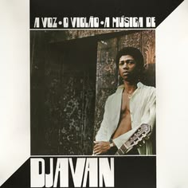
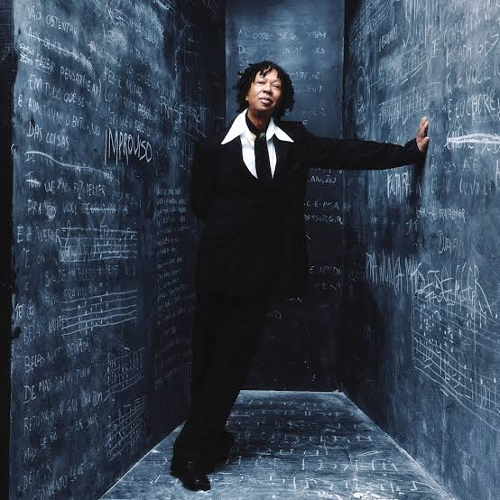

Djavan Caetano Viana é um cantor, compositor, arranjador, produtor musical, empresário e violonista brasileiro. Aclamado pela crítica e músicos, principalmente por sua criatividade, Djavan é conhecido por sua versatilidade e originalidade musical.

